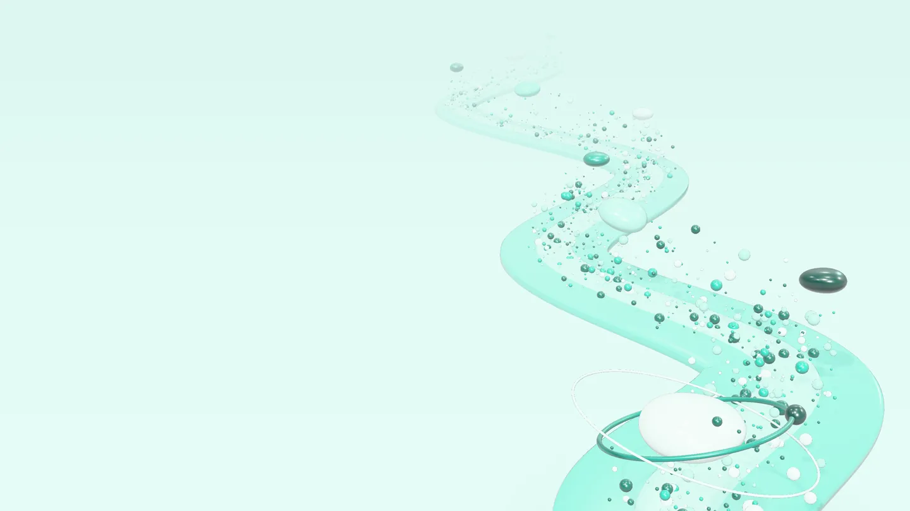
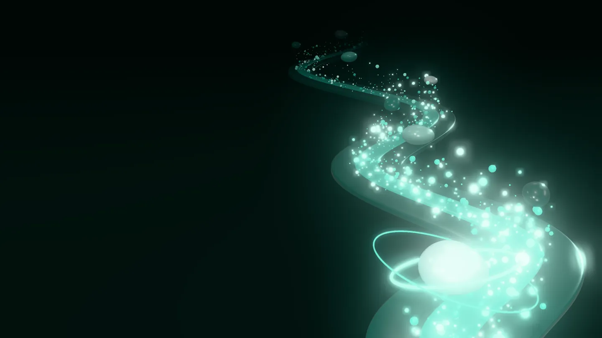
Drift
A river of time from 2016 to today, rendered as soft plastic under studio light. Serene, spacious, one hue. Things float, nothing is bolted down. Flip the switch in the corner: the tide turns.
The river, live
Nine thousand points, each shaded as a glossy bead in the fragment shader, ride the current from 2016 (far) to today (near). Eleven pebbles float above it, one per year. Move to stir the water, click for a ripple, flip the switch for night. Labels are plain HTML fed by onFrame.
Stills from the same studio
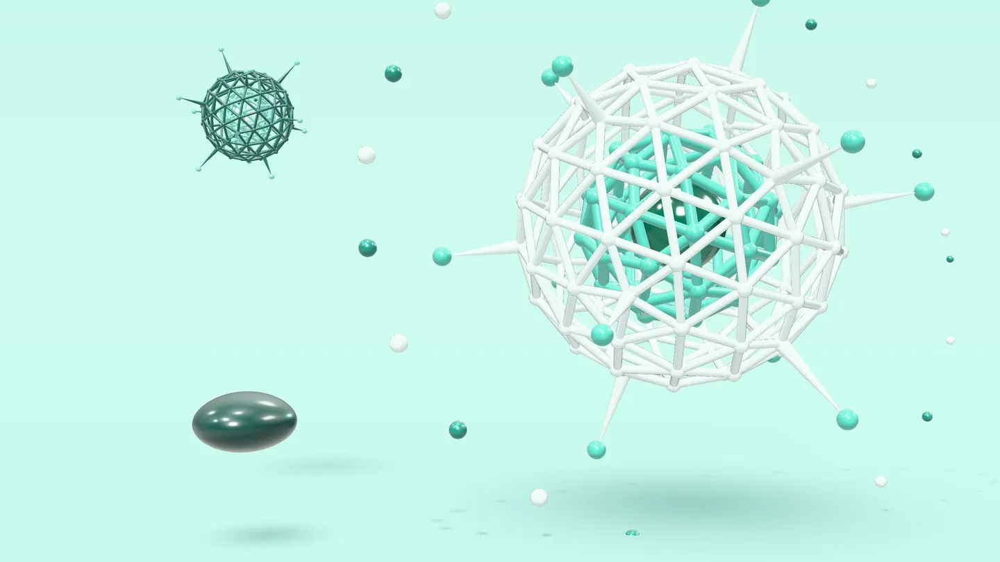
A bead, and a current that keeps going
The mark is a single-storey a: the bowl is a bead, the stem flows out into a current, and one small bead floats free above it. Glossy for large uses, mono for small ones.
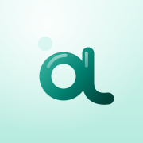
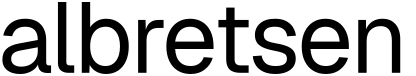
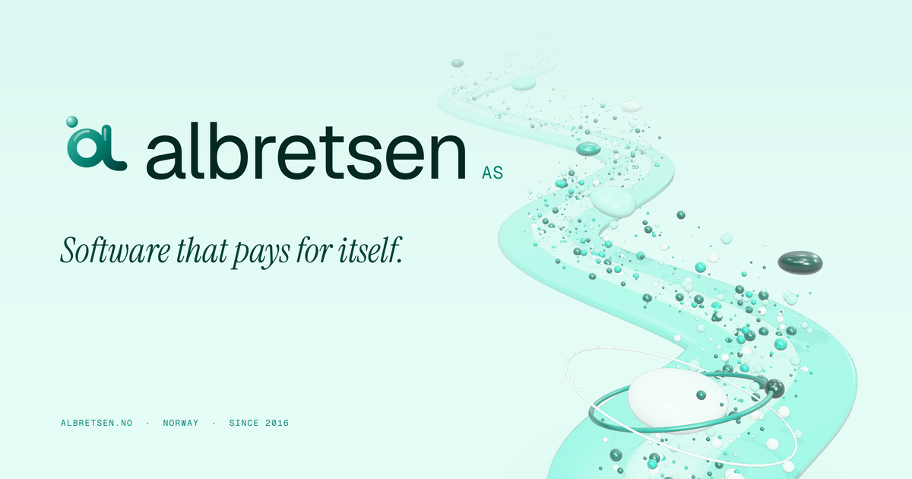
Shallows to deep water
Quiet text, one soft italic voice
Real logos, same studio
Each product's own logo, untouched, printed on a soft-plastic tile and given a small story: MCP Emails with a drifting stack of messages, Fun Libs with its blanks waiting as capsules, Toolrails with every tool in one orbit, Harbor held still in a bubble while it's paused.
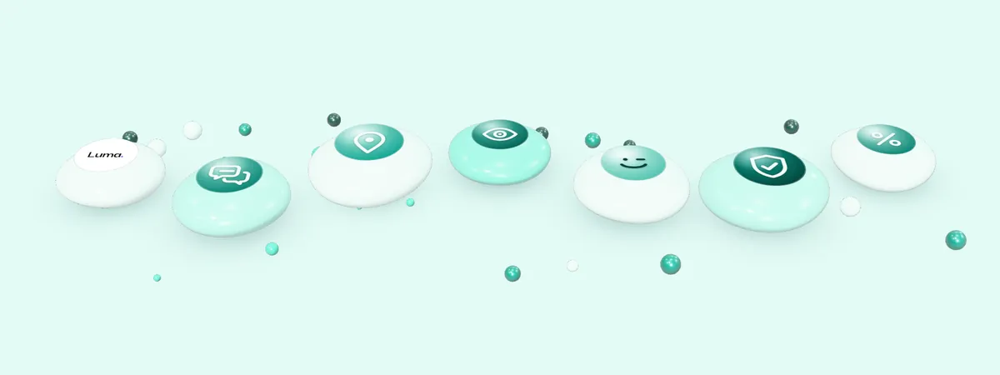
Things that float around the page
Ernst Haeckel's plates from Kunstformen der Natur (1904, public domain) toned into the palette, specimens cut out of them with luminance as alpha, a Birket Foster engraving of a stream (1858), soft-plastic objects as stickers, and procedural textures.
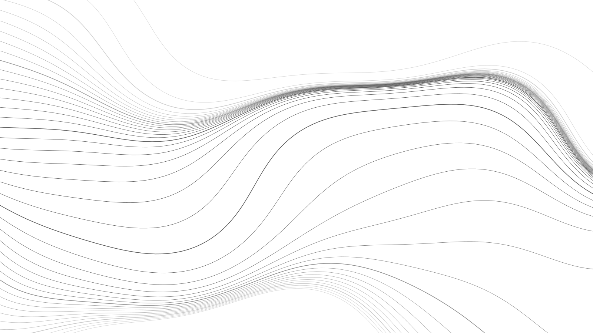
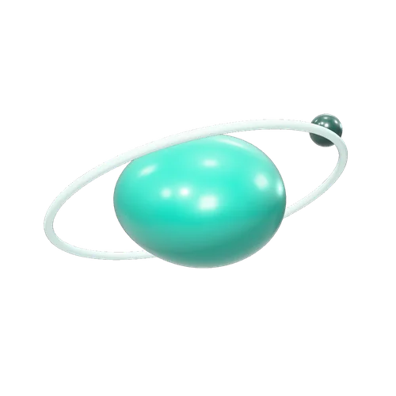
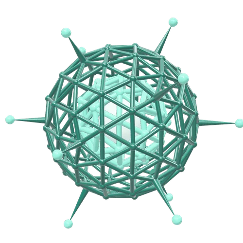
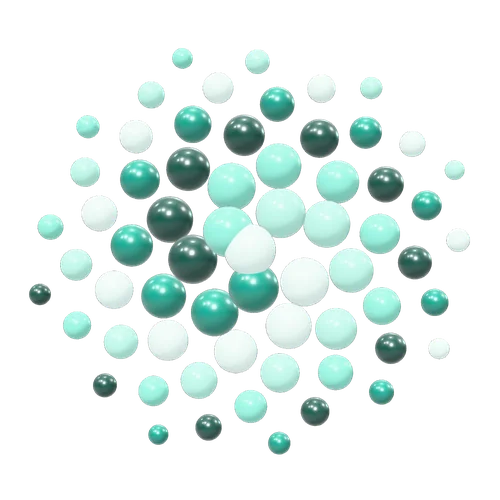
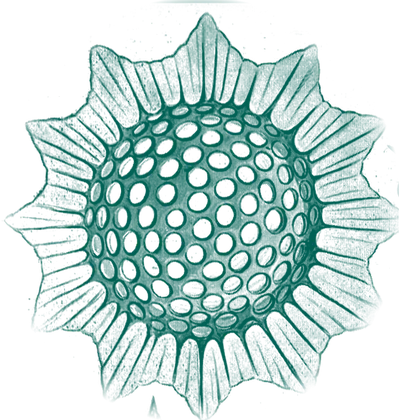
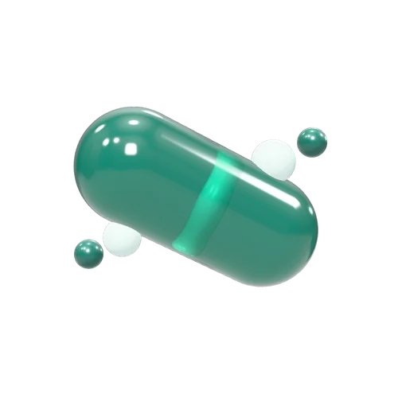
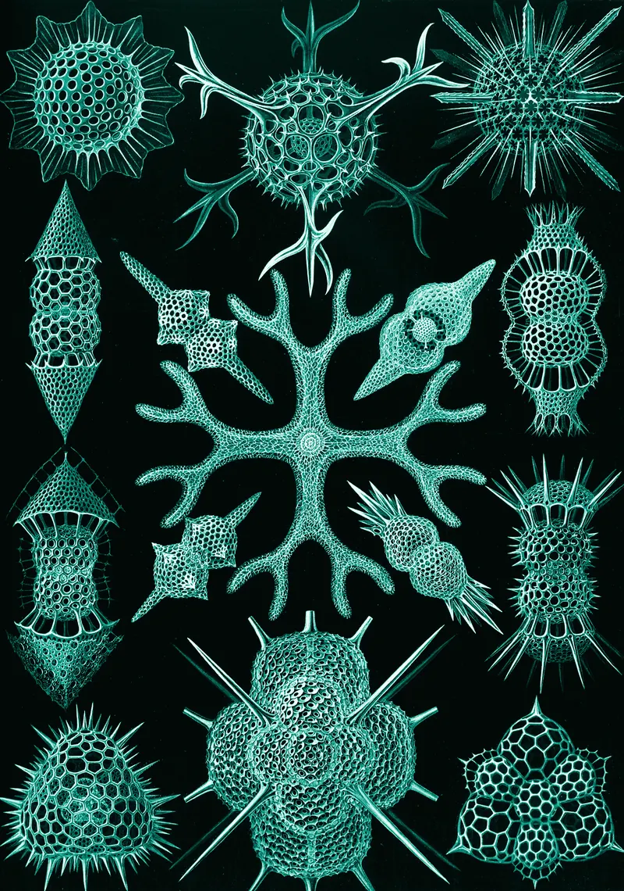
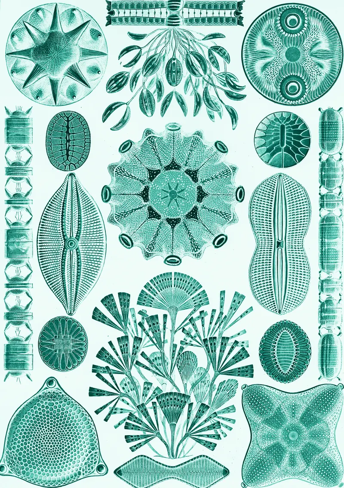
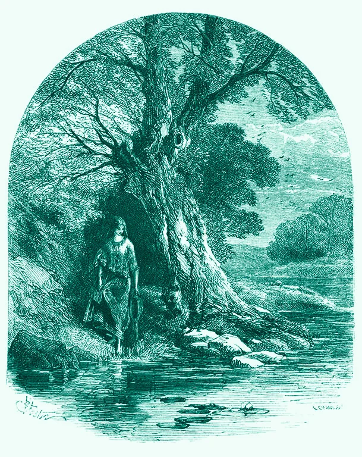
Everything on one spring
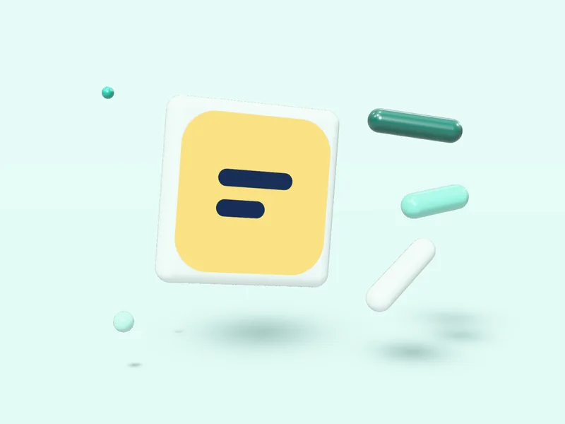
Radix-style
[data-state] enter and exit with a spring-sampled linear() easing.